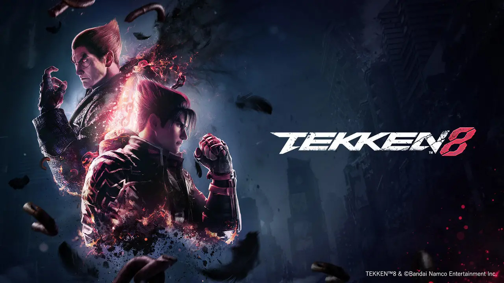

In Elden Ring, the shattered remnants of a divine artifact paint a canvas of secrets across a vast, open world. FromSoftware, masters of weaving challenge and lore, invite you to become a Tarnished adventurer, free to explore this breathtaking expanse as swordsman, mage, or monstrous brute. Your loyal steed Torrent isn't just transport, he's your acrobat, your spectral warhorse, and your key to hidden rooftops. Every corner whispers clues, from cryptic item descriptions to spectral messages left by fellow warriors. Mastering the rhythmic brutality of combat feels like composing a symphony of steel, punctuated by epic clashes against demigods like the scarlet-clad Malenia. Though technical blemishes may snag your journey, the shared struggle and triumphs of the community weave a tapestry of camaraderie. Elden Ring isn't just a game; it's a masterpiece, a world you conquer death after death, etching your legend onto the Lands Between's shattered legacy. So prepare to die, Tarnished, for glory, grotesque giant lobsters, benevolent mushroom people, and spectral allies await.
In Kingdom Hearts 2, childhood friends Sora and Donald navigate a breathtaking tapestry of Disney worlds, wielding friendship and dazzling Keyblade combos against darkness. This isn't just a nostalgia trip; it's a coming-of-age epic, tackling loss, identity, and the strength of bonds. Dive into Tron's neon city, soar through Peter Pan's Neverland, and clash with pirates alongside Jack Sparrow. The combat explodes with flashy combos and strategic Drive Forms, each a visual spectacle. Each Disney world seamlessly blends into the larger narrative, culminating in a heart-wrenching climax that celebrates the power of friendship. Despite a labyrinthine plot and convoluted lore, Kingdom Hearts 2's charm lies in its sincerity, its soaring soundtrack, and its unwavering belief in the magic of light and friendship. It's a game that stays with you, a reminder that even the darkness can't extinguish a heart filled with love.
Bloodborne isn't a game, it's a gothic descent into a world corrupted by eldritch nightmares. You, a hunter drenched in plague blood, weave through Yharnam's labyrinthine streets, a city choked by fog and madness. Every corner whispers threats, from rabid beasts to grotesque monstrosities that defy description. Combat feels like a twisted ballet, rewarding aggressive parries and visceral attacks against foes both horrifying and oddly poetic. Each boss is a grotesque masterpiece, a Lovecraftian nightmare made flesh, demanding mastery and strategic cunning. The story unfolds in cryptic whispers, environmental storytelling weaving a tale of cosmic horror and forbidden knowledge. While some may find its difficulty punishing and its lore opaque, Bloodborne rewards persistence with a sense of mastery and discovery unmatched. It's a haunting, exhilarating masterpiece, a descent into darkness that might just leave you changed forever.

In Red Dead Redemption 2, Rockstar Games paints a sprawling portrait of the Wild West's twilight, a world bathed in both golden sunsets and the fading embers of outlaw gangs. You become Arthur Morgan, a grizzled gunslinger caught between loyalty to his Dutch van der Linde gang and a budding conscience. Every rustle of tumbleweed whispers a tale, from dusty frontier towns to sprawling prairies teeming with life. You forge your own path in this open world, robbing trains, hunting bounties, or simply soaking in the sun-drenched vistas from horseback. Shootouts explode in balletic gunfights, each bullet ringing with consequence. Morality bleeds into every choice, from helping a stranger in need to pulling off a daring heist. The story, a Shakespearean tragedy of loyalty and redemption, unfolds through Arthur's eyes, his gruff exterior slowly revealing a depth of humanity that will leave you heartbroken. Red Dead Redemption 2 isn't just a game; it's an experience, a chance to ride off into the sunset and lose yourself in a world teetering on the edge of change. So saddle up, partner, and prepare for a journey you won't forget.

Tekken 8 roars onto the scene with a visceral punch, promising to redefine the fighting game genre. FromSoftware's influence whispers in the brutal, yet fair, combat system, where every strike and parry echoes with weight. The iconic cast returns, each fighter honed with new moves and devastating combos, while fresh faces like the new Mishimia Reina ignite the stage. The world pulsates with vibrant energy, from the rain-slicked streets of Tokyo to the fiery depths of a volcanic arena, each stage a battleground begging to be mastered. Tekken 8 doesn't just offer depth, it unleashes an ocean of customization, letting you craft your ultimate fighting machine with personalized combos, costumes, and even music tracks. Preparefor a revolution in the arena, Tarnished warriors, for Tekken 8 aims to be more than a fighting game; it's a symphony of rage, precision, and personal expression poised to claim the throne as the king of fighters.
